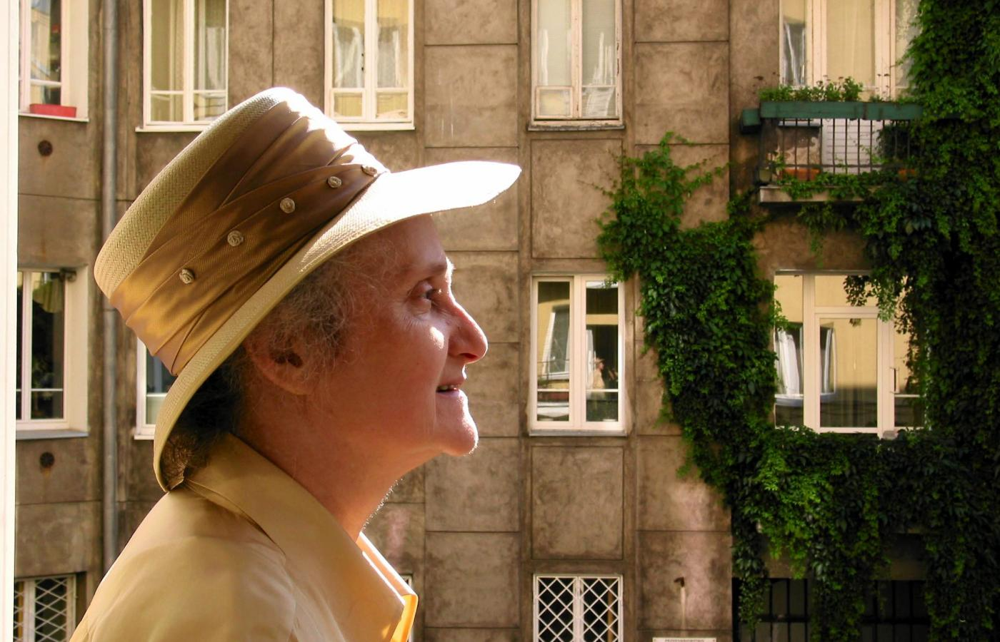
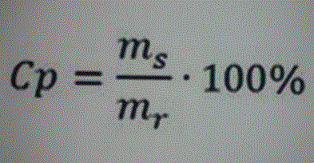

Klasa 7A
wychowawca Ewa Lipińska-Krzemianowskainformatyka
religa
w-f
edukacja dla bezpieczeństwa
Religia klasa 7A
Temat: Święta Wielkanocne - Zmartwychwstanie Jezusa zwycięstwem nad grzechem i śmiercią.
Pan Jezus zmartwychwstał nie dla siebie, ale dla nas, aby zmartwychwstanie dokonywało się w naszym życiu. Święta Wielkanocne są wyjątkowe . Ukazują one istotę naszej wiary. Nie tylko przypominają fakt: Chrystus żyje, zmartwychwstał , ale uobecniają wydarzenie zmartwychwstania Jezusa. Umacniają nasze słuszne przeświadczenie, że Jezus naprawdę powstał z grobu i przezwyciężył śmierć, jest obecny i działa w Kościele. Dzięki temu my możemy żyć wiecznie. Dlatego misterium wielkanocne domaga się od nas wyjątkowego przygotowania. Co składa się nań? Po pierwsze wymaga ono od nas odnowienia wiary w zmartwychwstanie i po drugie powstania z tego, co dla chrześcijanina jest śmiercią- zerwania z grzechem ciężkim i stania się znowu żywym członkiem Kościoła. Święta te poprzedza i bezpośrednio przygotowuje do nich niezwykle piękna liturgia Triduum Paschalnego: Wielki Czwartek, Wielki Piątek, Wielka Sobota. Udział w niej jest ogromnie ważny, jako że uzdalniający nas do tego, by z radością śpiewać Alleluja.
Zwyczaje wielkanocne: https://www.youtube.com/watch?v=SIyg486T0CY
Sens Świąt Wielkiejnocy: https://www.youtube.com/watch?v=CgAgG8iZObY
Ponieważ w tym roku Święta Wielkanocne przypadają w trudnym czasie walki z koronawirusem (COVID-19) przesyłam zalecenia Biskupa opolskiego dotyczące celebracji Świąt Wielkanocnych. Najważniejsze, że możecie odmówić w swoich domach żal za grzechy doskonały ( żal doskonały polega na tym, że żałujemy za popełnione grzechy ze względu na miłość Boga; żałujemy, ponieważ grzesząc, okazaliśmy Mu niewdzięczność i brak zaufania)
i przyjąć w czasie świąt komunię w sposób duchowy- jest to gorące pragnienie przyjęcia Pana Jezusa do swojego serca, uczestnicząc za pomocą mediów w nabożeństwach i Mszach św. Wierzę o słodki Jezu, że jesteś rzeczywiście obecny pod postaciami chleba i wina. Kocham Cię z całego serca! Żałuję za grzechy, którymi Cię obraziłem(am). Przyjdź do serca mojego, o Ty jedyne pragnienie moje! Rzucam się w Twoje objęcia, oddaję Ci się cały(a), o jedyny przedmiocie mej miłości. Nie dopuść, abym się kiedy miał(a) oderwać od Ciebie!
Na te Wielkanocne Święta, chociaż tak inne,
życzę spokoju i otwartego serca.
Wytrwałość i nadzieja niech Was nie opuszcza,
w zdrowiu i ufności wyglądajcie jutra.
Błogosławieństwa Tego, co za nas umarł,
koronę strącił cierniową i Zmartwychwstał.
Alleluja!
WYCHOWANIE FIZYCZNE - DZIEWCZYNY
TEMAT:Organizacja aktywnych form spędzania wolnego czasu
#zostań w domu trenuj w domu !!!
Przypominam o zasadach bhp podczas ćwiczeń w domu,tak jak na lekcjach wf w szkole. Proszę również pamiętać, że ćwiczymy tylko i wyłącznie jak jesteśmy zdrowi !
Potrzebne przybory : krzesło ,koc
1. Stojąc bokiem do krzesła oprzyj swoją rękę na jego oparciu, natomiast drugą ułóż na biodrze. Wyciągnij przed siebie jedną nogę, a drugą uginaj wykonując swego rodzaju przysiad na jednej nodze.
2. Leżąc na plecach opieraj stopy na siedzisku krzesła, natomiast ręce ułóż swobodnie wzdłuż tułowia. Teraz na zmianę unoś i opuszczaj biodra. To ćwiczenie można również wykonując z naprzemiennym prostowaniu raz lewej, a raz prawej nogi.
3. Ustaw się przodem do oparcia krzesła, z którym ćwiczysz. Następnie wyciągaj raz jedną, raz drugą nogę maksymalnie do tyłu tyle ile możesz. Pamiętaj, aby zachować przy tym proste plecy.
4. Przy pomocy krzesła możesz wykonywać również pompki. Wystarczy, że ułożysz ciało w pozycji podporu przodem, jednak opierając dłonie o siedzisko krzesła. Następnie, opierając stopy mocno o ziemię wykonuj pompki.
5. Istnieje również druga forma pompek z krzesłem. Trzeba jednak zmienić ułożenie. Wtedy to na krześle trzymać należy stopy, natomiast ręce powinny opierać się na podłodze -to ćwiczenie tylko dla chętnych
6. Ćwiczenia z krzesłem można wykonywać także siedząc na nim. Wystarczy usadowić się na skraju krzesła i prostymi plecami opierać się o jego oparcie. Następnym krokiem jest ugięcie nóg i przyciąganie je jak najbliżej klatki piersiowej.
7. Korzystając z pomocy krzesła można również wykonywać nieco odmienioną formę klasycznych przysiadów. W tym przypadku polegają one na uginaniu nóg jak do przysiadów przy jednoczesnym trzymaniu się za oparcie krzesła.
8. Siedząc na krześle można wykonywać także skręty tułowia. Najpierw trzeba wygodnie usiąść, a potem założyć ręce na szyję. Następnie trzeba odwrócić się tułowiem w lewą stronę i unosić lewą nogę tak, aby dotykała łokcia z naszej prawej ręki. Analogicznie trzeba wykonywać to ćwiczenie na drugą stronę.
9. Trzymając się za oparcie krzesła można wykonywać także ćwiczenie określane jako wykopy w bok. Polega ono na tym, aby trzymając oparcie starać się utrzymać równowagę, przy jednoczesnym unoszeniu jak najwyżej prawej nogi. Później to samo ćwiczenie trzeba wykonać z wykorzystaniem lewej nogi. Można także na zmianę wymachiwać prawą i lewą nogą.
10. Jeśli dysponuje się dwoma takimi samymi krzesłami trzeba ustawić je naprzeciwko siebie. Następnie trzeba wejść w występującą pomiędzy nimi przerwę i przytrzymać się rękami na siedzisku krzeseł. Następnie trzeba ćwiczyć siłę swych rąk i utrzymywać ciężar całego ciała wisząc w powietrzu
Każde z ćwiczeń wykonaj min.8 razy
Powyższe ćwiczenia pomogą Ci zachować odpowiednią wagę i smukłą sylwetkę. Wykonuj je każdego dnia, a sama zobaczysz, że wzmocnią się mięśnie Twoich nóg, ud, pośladków oraz ramion. Sama widzisz, że do zachowania dobrej kondycji nie jest potrzebny specjalistyczny sprzęt.
Dla chętnych czyli dla Ciebie przesyłam krótki filmik z ćwiczeniami rozciągającymi
https://www.youtube.com/watch?v=AXeGwLH9m2g
Pozdrawiam
WF chłopcy
Klasa 7 A
Temat : Ćwiczenia ruchowe
W tym tygodniu Twoje zadanie to wykonywanie ćwiczeń ruchowych, które zamieszczam poniżej.
Pamiętaj , aby ćwiczyć tylko wtedy ,kiedy jesteś zdrowy,jeśli cokolwiek
Ci dolega, źle się czujesz lub coś Cię boli, to nie ćwicz.
Zaczynamy od rozgrzewki ( 10 ćwiczeń ,które znasz z lekcji wychowania fizycznego),powinna trwać ok. 10 - 15 minut.
Propozycja ćwiczeń na aktywność w domu :
1. Bieg w miejscu ( liczymy do 40 )
2. Krążenia ramion ( w tył i w przód 10x )
3.Krążenia bioder ( w lewo i w prawo 10x )
4. Bieg w miejscu z wysokim unoszeniem kolan ( licz do 30 )
5. Zrób rozkrok i wykonaj skłon tułowia ( raz do jednej,raz do drugiej nogi 10x)
6. Brzuszki ( ramiona skrzyżowane na barkach lub wzdłuż tułowia 15 x )
Po każdym ćwiczeniu rozluźniamy mięśnie.
Każdą serie powtórz 3 razy lub w zależności od samopoczucia.
Zachęcam do korzystania z dostępnych w tv i internecie wielu propozycji
ćwiczeń fizycznych do samodzielnego wykonania w domu.
Klasa 7 Informatyka
Temat 14 Komórka, adres, formuła cd.
1. Wejdź na stronę:
https://dlaucznia.migra.pl/teraz-bajty.-informatyka-dla-szkoly-podstawowej.-klasa-vii/praca-samodzielna/
2. Pobierz temat
3. Zapoznaj się z punktem 2. Obliczenia w arkuszu kalkulacyjnym.
4. Jeszcze raz wejdź na stronę
https://dlaucznia.migra.pl/teraz-bajty.-informatyka-dla-szkoly-podstawowej.-klasa-vii/praca-samodzielna/
5. Pobierz pliki ćwiczeniowe
6. W folderze LibreOffice otwórz plik T14_z2_Ameryka
7. Zapisz go na swoim komputerze w folderze Dokumenty
8. Kliknij w komórkę C31
wpisz =
klikaj kolejno w komórki C8 Klawisz +
C9 Klawisz + itd.
Tak ma to wyglądać
=C8+C9+C10+C11+C12+C13+C14+C15+C16+C17+C18+C19+C20+C21+C22+C23+C24+C25+C26+C27+C28+C29+C30
Następnie wciśnij klawisz Enter
Pojawi się wynik 22318,61
9. W podobny sposób wykonaj pozostałe obliczenia w komórkach Razem.
10. Plik zapisz i wyślij w załączniku na mój adres: jakrzemian@gmail.com
Programy potrzebne do realizacji tematu (do wyboru):
LibreOffice (do pobrania bezpłatnie w ramach pakietu LibreOffice)https://www.libreoffice.org/download/download/
Arkusze Google (wersja online bezpłatnie) https://www.google.pl/intl/pl/sheets/about/
Informatyka Klasa 6
j.angielski
geografia/przyroda
technika
matematyka
język angielski klasa 7A
W dniu dzisiejszym dokańczamy listę zawodów, którą rozpoczęliśmy na poprzedniej lekcji. Nazwy zawodów w języku angielskim wraz z ich polskimi tłumaczeniami wpisujemy pod tematem lekcji:
Lesson
Topic: Jobs and occupations praca i zawód. Kontynuacja tematu.
Geisha Gejsza (czyli zawód kobiecy z Japonii kobieta o umiejętnościach artystycznych, bawiąca gości rozmową, tańcem, śpiewem i grą na instrumentach.)
Footballer (albo football player) Piłkarz
Forest ranger strażnik leśny
Builder budowniczy
Lunchroom supervisor pracownik stołówki
Farmer rolnik
Flight attendant (Stewardess) stewardesa
Reporter reporter
Professor professor
Police officer policjant/oficer policji
Postman listonosz
Photographer fotograf
Pilot pilot
Catholic nun (lub po prostu Nun) zakonnica
Engineer inżynier
Carpenter stolarz/cieśla
Archictect architect
Foreman majster
Construction worker pracownik budowlany
Po sporządzeniu notatki w zeszycie włączmy nasz filmik z wymową angielską dziś odpalamy film od czasu 2:37 czyli od momentu kiedy pojawia się słówko Geisha:
https://www.youtube.com/watch?v=x9ofeV_nCUQ
Następnie włączamy sobie nasz filmik od początku i powtarzamy wszystkie nazwy zawodów, spoglądając przy okazji na naszą listę, aby utrwalić nazwy i wymowę wszystkich słówek. Czynność tą możemy powtarzać dowolną ilość razy.
J pozdrawiam!
Kl 7a matematyka
Temat: Procenty w zadaniach tekstowych.
Przepisz do zeszytu:
Pamiętasz ? 2%= 2/100 , 5% = 5/100 , 10% = 10/100 , 20% = 20/100
2/100 = 0,02 , 5/100 = 0,05 , 10/100 = 0,10, 20/100 = 0,20
5% z 20 = 5/100 * 20 = 0,05 * 20
Przykład 1. a) 5% z liczby x mamy 0,05 *x,
liczba o 5% większa od x to 1x + 0,05*x = 1,05 x
liczba o 5% mniejsza od x to 1x - 0,05*x = 0,95 x
b) 10% z liczby x = 10/100 x = 0,10*x
liczba o 10% większa od x to 1x + 0,10*x = 1,10 x
wyjaśniam ( 1+ 0,10) x =1,10 x
liczba o 10% mniejsza od x to 1x - 0,10*x = 0,90 x
wyjaśniam ( 1- 0,10) x =0,90 x
zad.1.
posługując się powyższym przykładem zapisz:
a) 20% liczby x to .................
liczba o 20% większa od x to.................
liczba o 20% mniejsza od x to.................
b) 40% liczby x to.................
liczba o 40% większa od x to.................
liczba o 40% mniejsza od x to.................
Obejrzyj film https://www.youtube.com/watch?v=WPxrB-sqPSE
Przepisz do zeszytu pierwsze zadanie z filmu ( o obniżce i podwyżce cen butów) z rozwiązaniem
Polecam do oglądania w TVP Rozrywka od poniedziałku do piątku o godz od 11.00 do 11.25 przygotowaną dla Was lekcję matematyki (niedługo będziemy przerabiać te tematy,
Powtórki na internecie https://vod.tvp.pl/kolekcja/szkola-z-tvp,47303176
Geografia
Temat: Turystyka. Regiony turystyczne Polski.
Przepisz notatkę do zeszytu:
Turystyka obejmuje różne formy spędzania czasu wolnego poza domem. W zależności od wyjazdu turystykę dzielimy na:
- wypoczynkową
- religijną
- biznesową
- poznawczą
- leczniczą
Walory turystyczne Polski:
a) Przyrodnicze ( to m.in. urozmaicona rzeźba terenu, jeziora, rzeki)
Obejrzyj film:
https://www.youtube.com/watch?v=ZLR0B6O6cmc
b) Kulturowe ( liczne zabytki, muzea )
Na liście UNESCO jest obecnie 15 polskich zabytków m.in. Stare Miasto w Krakowie, Królewskie Kopalnie Soli w Wieliczce i Bochni, Zamek krzyżacki w Malborku
Obejrzyj film:
https://www.youtube.com/watch?v=GEHHW6JoRM4
c) Ciekawe miejsca
https://www.youtube.com/watch?v=I3w9m4mGk2Y
Napisz, co ciekawego jest w regionie, w którym mieszkasz?
Technika/ pracownia gospodarstwa domowego kl. 7 A
Temat: Ekologiczna torba na zakupy ( lekcja 2)
I. Zadanie pierwsze
Obejrzyj film. Zobaczysz jak w prosty sposób możesz sam uszyć torbę na zakupy.
https://www.youtube.com/watch?v=ebFt2CNlwIk
Zamiast maszyny do szycia brzegi torby i uszy można przeszyć ręcznie ściegiem za igłą
II. Zadanie drugie
Zobacz drugi film. Tak się szyje ściegiem za igłą.
https://www.youtube.com/watch?v=PNBaV7aP44g
III. Zadanie trzecie
Narysuj na dużej kartce z bloku wykrój torby, który został przedstawiony w pierwszym filmie (film 2:38 minuta).
https://www.youtube.com/watch?v=ebFt2CNlwIk
Na Twojej kartce powinien się znaleźć :
1. rysunek poglądowy torby wraz z wymiarami
2. rysunek worka wraz z wymiarami
3. rysunek uszu z wymiarami.
Czyli dokładnie tak jak to jest przedstawione na filmie.
Pamiętaj praca ma być wykonana bardzo starannie z pomocą ołówka i linijki.
Zdjęcie Twojej pracy wyślij mi na mój adres e -mail.
Klasa 7A Technika / grupa stolarnia
Temat: Stopy metali.
Stop powstaje w wyniku połączenia dwu lub więcej metali. Otrzymuje się go przez stopienie składników. Stopy charakteryzują się innymi właściwościami niż właściwości składników użytych do ich przygotowania.
Stopy metali - rodzaje, zastosowanie.
Wśród najważniejszych stopów wykorzystywanych w technice można wymienić stal, brąz, mosiądz, stopy aluminium, czy stopy metali szlachetnych.
Odwiedź stronę https://eszkola.pl/chemia/stopy-metali-7212.html
W tabeli nr 1 przedstawiono najważniejsze stopy metali
Zad.1 W zeszycie.
Do stopu dopisz zastosowanie.
Przykład:
Stal węglowa - Podstawowy materiał konstrukcyjny, stosunkowo podatny na korozję
Żeliwo - ................................................
Brąz - ................................................
Mosiądz - ................................................
Duraluminium - .................................................
chemia
muzyka
WOS
j.polski
Język polski
Temat lekcji-Siła uśmiechu
 Małgorzata Baranowska urodziła się w Krakowie w 1945 roku podczas długiego powrotu rodziców do zrujnowanej Warszawy. Ukończyła polonistykę na Uniwersytecie Warszawskim, w latach 19702005 pracowała w Instytucie Badań Literackich PAN, zajmując się m.in. poezją surrealistyczną i twórczością Wisławy Szymborskiej. Autorka kilkunastu książek tomików wierszy, książek dla dzieci, antologii i tomów prozatorskich. Nie przestaje pisać o Warszawie. Za książkę Prywatna historia poezji otrzymała w 2000 roku nominację do nagrody Nike. Ponownie nominowana w 2004 za Posłańca uczuć. Współpracuje z Polskim Radiem kiedyś jako autorka słuchowisk dla dzieci, później bierze udział w audycjach literackich, najchętniej o poezji. Należy do Stowarzyszenia Pisarzy Polskich. Teksty historyczne i krytycznoliterackie publikowała m.in.
w "Twórczości", "Tekstach" i "Tekstach Drugich", "Res Publice Nowe ", "Kontekstach", "Nowych Książkach"
Fragment tekstu:
Trzeba się przyznać! Właściwie nie wiemy, po co nam szczęście. Nie wiemy też dokładnie , czym ono jest. To pojęcie takie jak życie. Zbyt szerokie i zbyt zależne od czasów, przyjętej filozofii i instytucji, żebyśmy mogli je zdefiniować .A jednak jest czymś, co podobnie jak życie praktykujemy. Wbrew przekonaniu wielu szczęście na co dzień nam towarzyszy.
zadanie dla uczniów:
1.Wpisz temat lekcji do zeszytu
. 2.Przeczytaj wywiad z pisarką.
https://www.polityka.pl/tygodnikpolityka/kultura/1523927,1,wywiad-malgorzata-baranowska--o-sensie-i-szczesciu-mimo-choroby.read
3 Przeczytaj krótką biografię pisarki i fragment tekstu.
4. Napisz do zeszytu odpowiedź na pytanie :
Czym dla Ciebie jest codzienne szczęście?
Pozdrawiam!
Muzyka kl.VII
Przepisz lekcję do zeszytu przedmiotowego i wykonaj zadania.
Temat:Poezja wyśpiewana.
1.Style muzyki: poezja śpiewana
Poezja śpiewana-gatunek muzyczny,w którym utwory składają się z wiersza, zwykle o chrakterze ballady, oraz skomponowanej specjalnie do utworu muzyki.Najczęściej są to kompozycje o głębokiej treści.
2.Związki muzyki z tekstem literackim.
Literatura i muzyka jawią się jako sztuki siostrzane, i to od zarania dziejów! Muzyka stanowiła przecież od zarania cywilizacji element pomagający w działaniu zespołowym, ułatwiający komunikację. Prawdopodobnie od samego początku była łączona z tańcem oraz słowem.
3.Najwięksi bardowie: Wojciech Bellon, Elżbieta Adamiak, Bob Dylan, Leonard Cohen, Jacques Brell, Edith Piaf
Zadanie 1: Znajdź w dostępnych źródłach (np.internet, encyklopedia, prasa) nazwiska innych wykonawców poezji śpiewanej.
1. Marek Grechuta
2.....................................
3.....................................
4.....................................
Zadanie 2 : Posłuchaj kilku utworów z ,,Krainy łagodności" (YouTube).
Wybierz najciekawszy utwór napisz tytuł utworu i wykonawcę.
https://www.youtube.com/playlist?list=PLKAkWGIAEKLiXo8_LsISWvTvPdPmcPvoo
Chemia Klasa 7 A
Temat: Stężenie procentowe roztworu
Zapisz w zeszycie definicję
Stężenie procentowe roztworu (cp) to liczba gramów substancji rozpuszczonej w 100 g roztworu.
gdzie ms-masa substancji rozpuszczonej
mr-masa roztworu
Wodny roztwór soli kuchennej jest 7% to znaczy, że w 100 g roztworu znajduje się 7 g soli kuchennej.
Zadanie 1.
Oblicz jakie będzie stężenie procentowe roztworu jeżeli ms=25 g a mr=100 g. Podstaw do wzoru i oblicz.

matematyka
fizyka
plastyka
kl.7a- matematyka
Temat : Rozwiązywanie zadań tekstowych.
Zapisz do zeszytu:
Rozwiązanie zadania to:
- analiza zadania
-oznaczenie niewiadomej
-ułożenie równania
-rozwiązanie równania i jego sprawdzenie
-zapisanie odpowiedzi
Obejrzyj filmy link poniżej. z każdego wybierz jeden przykład zadania i przepisz go wraz z rozwiązaniem do zeszytu
https://www.youtube.com/watch
https://www.youtube.com/watch?v=vWBI5oSlUCQ
Kl 7- fizyka
Temat :Siły w przyrodzie .Siła sprężystości
Przepisz do zeszytu z fizyki:
Zdolność ciał do odkształcenia oraz powrotu do poprzedniego kształtu nazywamy sprężystością. Im łatwiej ciało powraca do poprzedniego kształtu tym bardziej jest sprężyste.Siły, które powodują, że ciało jest rozciągane lub sprężane nazywamy siłami sprężystości.
Zad.. Obejrzyj film na you tube
https://www.youtube.com/watch?v=bhMSqNbyQpU
Odpowiedz na pytania:
1. z czego zbudowane są ciała ?
2. Co może się stać gdy na ciało działa siła (siła i jej skutek) ?
Spróbuj naciągać gumkę z różną siłą. Co się stanie?
PLASTYKA - KLASA 7
ZADANIE 1
Zaprojektuj wzór z elementów geometrycznych ( koła, kwadraty, trójkąty itp. )
Możesz rysować wybrane figury geometryczne w różnych układach tak aby tworzyły ciekawą kompozycje.
Gotowy wzór pokoloruj w ciepłej lub zimnej gamie barwnej.
Wykonaj prace starannie
Do wykonania pracy będzie potrzebne : kartka papieru z bloku rysunkowego lub technicznego ołówek, linijka, kolorowe pisaki lub kredki.
Do rysowania figur geometrycznych możesz wykorzystać gotowe przedmioty
np. zakrętkę od butelki /jako koło/itp
Obejrzyj film, może ci pomóc w szukaniu inspiracji
https://www.youtube.com/watch?v=NpEgM2i4lnM
Wszystkie prace plastyczne które wykonasz w czasie nauki w domu trzeba zachować do oceny.
język polski
historia
biologia
JĘZYK POLSKI
Temat lekcji-Kazimierz Wierzyński o radości życia
Informacje do przeczytania:
Kazimierz Wierzyński -poeta, prozaik, eseista. Urodził się 27 sierpnia 1894 w Drohobyczu jako Wirstlein (w 1912 cała rodzina wystąpiła o zmianę nazwiska na Wierzyński), zmarł 13 lutego 1969 w Londynie.
Debiutował on w 1913 roku i szybko odniósł literacki sukces. Początkowo jego poezja miała charakter radosny i entuzjastyczny, z kolei w czasie wojny swoją twórczością zagrzewał do walki i motywował polskich żołnierzy. Wiersz Zielono nam w głowie pochodzi z tomiku wierszy- Wiosna i wino.
Kazimierz Wierzyński
Zielono nam w głowie
Zielono mam w głowie i fiołki w niej kwitną
na klombach mych myśli sadzone za młodu
Pod słońcem co dało mi duszę błękitną
i które mi świeci bez trosk i zachodu.
Rozdaję wokoło mój uśmiech, bukiety
rozdaję wokoło i jestem radosną
wichurą zachwytu i szczęścia poety
co zamiast człowiekiem powinien być wiosną!
Notatka do zeszytu:
Metafora-Zielono nam w głowie i fiołki w nie kwitną -poeta ma głowę pełną pomysłów
Epitet-..duszę błękitną
Personifikacja-(słońce}
Tytuł wiersza przywodzi nastrój beztroski i radości życia Poeta w sposób bezpośredni pokazuje nam drogę swojego życia .Pragnie dawać ludziom radość i sprawić, by ich życie było mniej ponure. Sławi proste radości- wiosnę, słońce, szczęście, życie.
Zadanie dla uczniów:
Narysuj w zeszycie obrazek do wiersza.
HISTORIA
Temat: Odzyskanie niepodległości przez Polskę.
Zapisz w zeszycie dużymi literami i na kolorowo. Zapamiętaj tę datę.
11 listopada 1918 roku Polska odzyskała niepodległość
Obejrzyj film: https://www.youtube.com/watch?v=Z4GdAYXfTGA
W 1918 r. po 123 latach zaborów państwo polskie odrodziło się i wybiło na niepodległość.
Jesienią 1918 r. dobiegała końca I wojna światowa, która przyniosła klęskę wszystkim trzem zaborcom. Dla Polaków była to niepowtarzalna szansa, aby móc odzyskać utracony byt państwowy. W dniu 11 listopada Rada Regencyjna przekazała Józefowi Piłsudskiemu Naczelne Dowództwo nad formującym się Wojskiem Polskim, a trzy dni później przekazała mu całą władzę cywilną. W dniu 22 listopada Józef Piłsudski ogłosił się Naczelnikiem Państwa i razem z premierem podpisał dekret o tymczasowych władzach Republiki Polskiej.
Zadanie domowe:
Napisz w 4 zdaniach kim był Józef Piłsudski?
BIOLOGIA
Podręcznik z biologii Puls Życia kl. 7 dostępny na stronie -
https://www.nowaera.pl/naukazdalna
Temat : Higiena i choroby układu wydalniczego.
Podręcznik str. 157 - przeczytać tekst.
Wykonaj zadania w zeszycie :
zad 1. Wypisz jak należy dbać o układ wydalniczy aby zapobiegać chorobą tego układu. (str. 157)
zad. 2 Wymień znane ci choroby układu wydalniczego. ( Zapoznaj się z ich przyczynami, objawami i sposobem leczenia - str. 158-159)